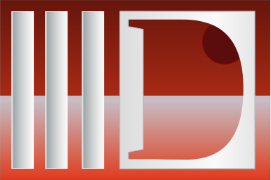
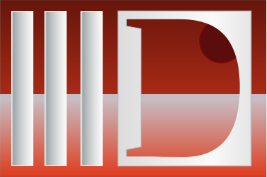

Origins: Digital Mars
D has its origins in Digital Mars. Thus the 'Mars' theme has always been closely tied to it.

D has its origins in Digital Mars. Thus the 'Mars' theme has always been closely tied to it.
A couple of logos have associated D with the devil. The reason is unclear (perhaps just 'D' for devil?).


The current logo at the official site uses a silhouette of Mars and moons.

I don't think anyone wants these.

 



There's a series of images of D doing various stuff. If someone could make an anthropomorphic D simple enough, it could stand as a logo.


The central idea here is to use the bowl of the 'd' as Mars, avoiding the visual awkwardness necessary in using an uppercase 'D'.
It's possible we can just use a graphic. The obvious choice is a stylized image of Mars.